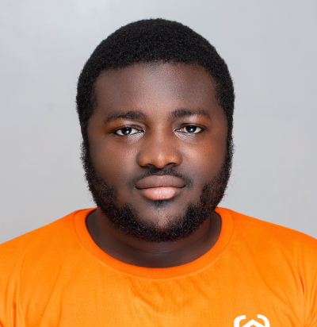
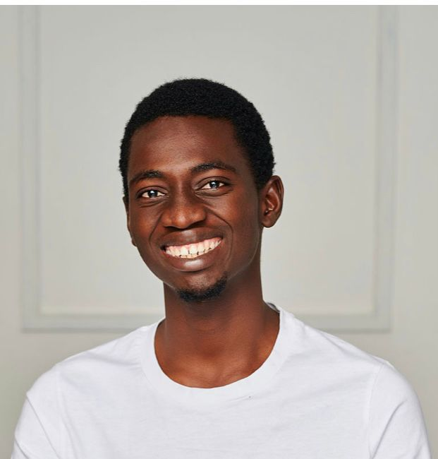

FM
Speaker 01
Fauziya Mohammed (Ziya)
🏛 PhysicalBuilding Wealth in the New Age of Technology
View Profile →
﷽
TIM 3rd Ijtimah • 1447 AH
Theme:
Raising Purposeful Professionals & Building a Model Ummah
Topic
Decoding the Future — Tech Trends & the 21st Century Khilafah
Event Schedule
Guests are welcomed and registered at the venue entrance. Please arrive early to settle in before the programme begins.
The programme opens with a recitation from the Holy Qur'an, followed by opening remarks from the Moderator.
Building Wealth in the New Age of Technology
How the modern Muslim professional can intentionally position themselves to build lasting wealth — not just for personal gain, but as a tool for community impact and Ummah development.
[Update topic before launch] — Joining virtually
Senior Fullstack Engineer and technology consultant with expertise in scalable software, AI integration, and digital product architecture.
[Update topic before launch] — Joining virtually
Full bio and topic details to be updated before the event.
Blockchain & the Internet of Values — Decentralizing Trust for Justice and Transparency
Blockchain not as speculation, but as trust infrastructure for justice — exploring smart contracts, decentralized zakat distribution, tokenized waqf management, and halal microfinance.
Finding Your Unique Voice: Beyond Personal Success
Shifting focus from self-expression for validation to purposeful expression for impact — your voice is not just for personal success, but for serving something greater than yourself.
12:35
Games & Activity Time
Interactive challenges, knowledge quizzes & group activities


The programme closes with final remarks and a communal Du'a for Allah's blessing, acceptance, and guidance upon all attendees.
Meet the Presenters
Session Moderator
Adam Yusuf
TIM 3rd Ijtimah 1447 AH
Speaker 01
Building Wealth in the New Age of Technology
View Profile →
Speaker 02
[Update topic]
View Profile →
Speaker 03
[Update topic]
View Profile →
Speaker 04
Blockchain & the Internet of Values
View Profile →
Speaker 05
Finding Your Unique Voice: Beyond Personal Success
View Profile →
Talk Topic
Talk Description
Biography